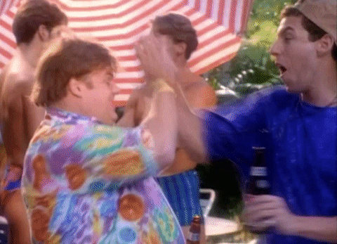

'Champions don't train...

....that's right and if you got a problem with it, eat me!' I love three things in this world: junk-food, hearing about other's love for junk-food and pop-culture nuggets from the close of last century. You know way back when MTV still played music and SNL was still funny. A time when junk food was almost as bad for you as cigarettes. People don't believe me when I tell them how good Kentucky Fried Chicken used to be, when they stocked their fryers with industrial oil. All that crispy, brown chicken, battered and fried in a vat of delicious carcinogens. It makes me weak in the knees just thinking of it now.
Chef's tip #1:Your local bowling alley's bar is a hidden gem with weekly drink deals and awesome junk-food. Also they play mostly forgotten music, which is always a plus.
This fella the other day was bragging about having his new car towed back to the dealer after trying to jump start it with cables. Turns out unhooking the battery erases the car's computer system, so the dealer had to reprogram it. He was talking about it like it was more a feature of the car than a bug. I mean it takes a special kinda dumb to be proud of that. Yeah if I had my pick, I'd go back a couple decades. You can keep your virtual living, where you need a GPS to get out of your own driveway. As for myself, I'm a time-clock punching chef by day and a bowling alley disaster by night. But who's kidding who here, I go for the cheap pitchers of beer.
|